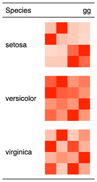

| gg_chunk {flextable} | R Documentation |
This function is used to insert mini gg plots into
flextable with function compose().
It should be used inside a call to as_paragraph().
gg_chunk(value, width = 1, height = 0.2, unit = "in")
value |
gg objects, stored in a list column. |
width, height |
size of the resulting png file in inches |
unit |
unit for width and height, one of "in", "cm", "mm". |

This chunk option requires package officedown in a R Markdown context with Word output format.
PowerPoint cannot mix images and text in a paragraph, images are removed when outputing to PowerPoint format.
Other chunk elements for paragraph:
as_bracket(),
as_b(),
as_chunk(),
as_equation(),
as_highlight(),
as_image(),
as_i(),
as_sub(),
as_sup(),
colorize(),
hyperlink_text(),
linerange(),
lollipop(),
minibar(),
plot_chunk()
library(data.table)
library(flextable)
if(require("ggplot2")){
my_cor_plot <- function(x){
cols <- colnames(x)[sapply(x, is.numeric)]
x <- x[, .SD, .SDcols = cols]
cormat <- as.data.table(cor(x))
cormat$var1 <- colnames(cormat)
cormat <- melt(cormat, id.vars = "var1", measure.vars = cormat$var1,
variable.name = "var2", value.name = "correlation")
ggplot(data = cormat, aes(x=var1, y=var2, fill=correlation)) +
geom_tile() + coord_equal() +
scale_fill_gradient2(low = "blue",
mid = "white", high = "red", limits = c(-1, 1),
guide = FALSE) + theme_void()
}
z <- as.data.table(iris)
z <- z[ , list(gg = list(my_cor_plot(.SD))), by = "Species"]
ft <- flextable(z)
ft <- mk_par(ft, j = "gg",
value = as_paragraph(
gg_chunk(value = gg, width = 1, height = 1)
))
ft
}